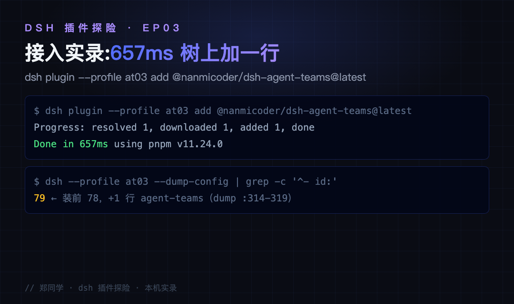
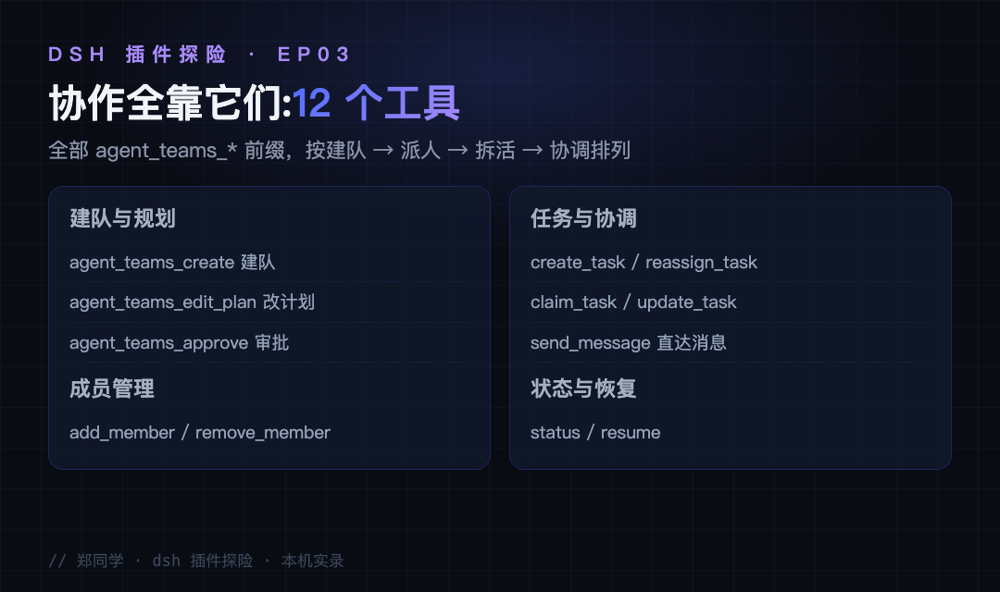
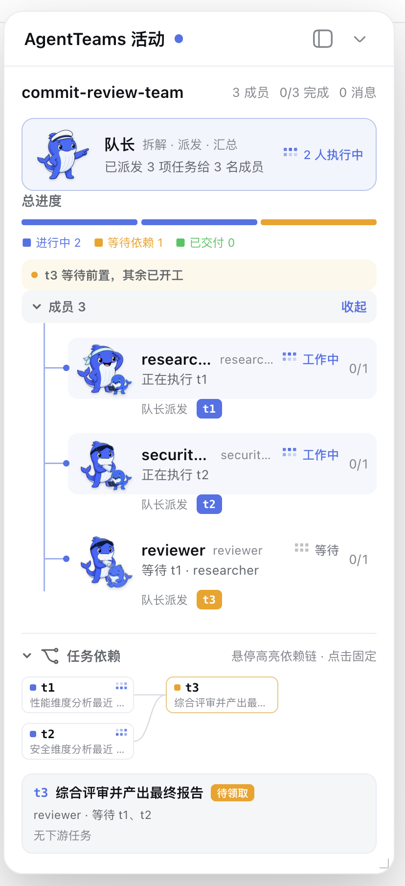
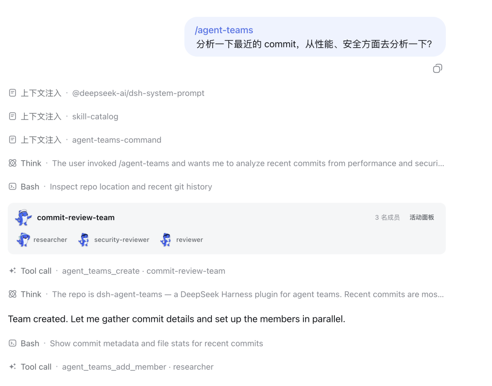
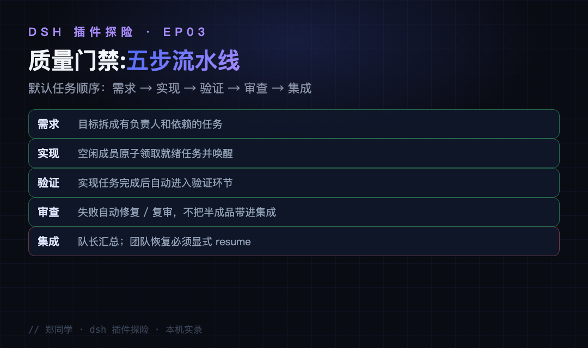
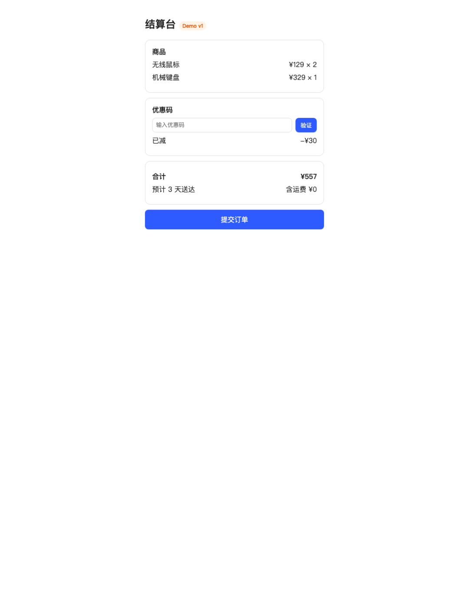
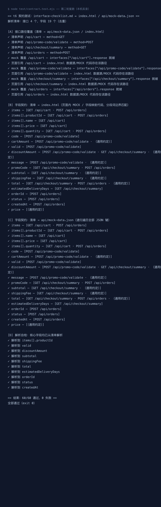
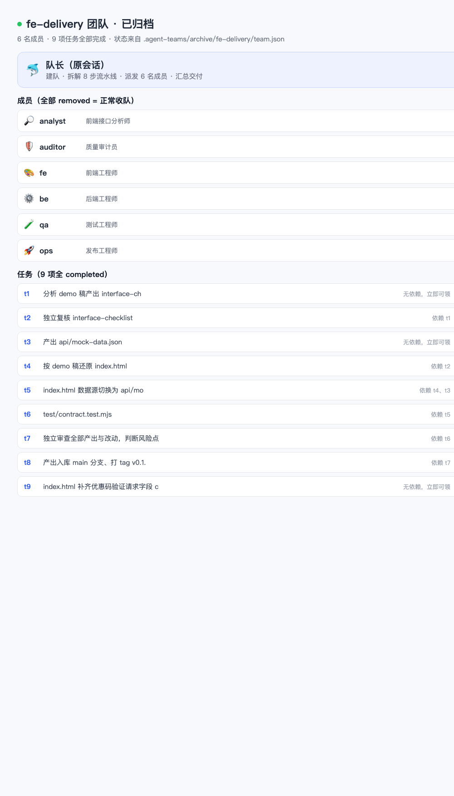
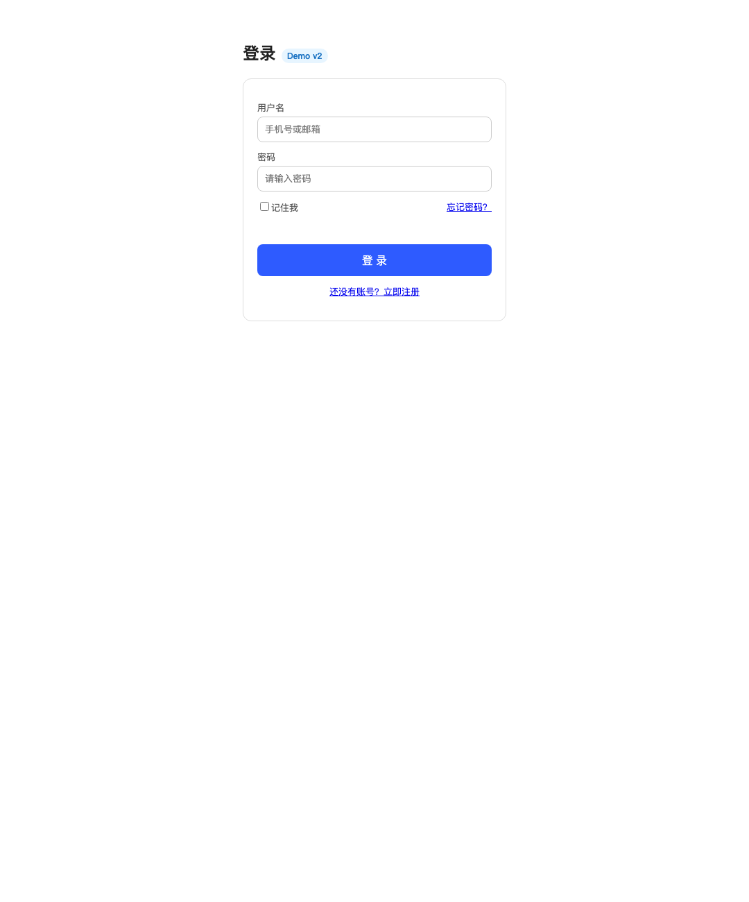
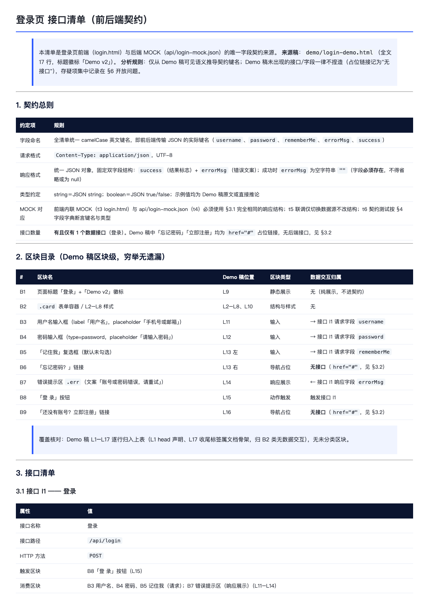

带 agent 干大活，你大概率遇过这三种散架：
场景一：多环节大活，单 agent 干着干着丢步骤。 写个带前后端的小工具，做着做着忘了还要写部署说明。你想要的其实是：拆成多个角色，各领各的，队长只管汇总。
场景二：任务有先后依赖。 设计没定稿就别动工开发，可 agent 分不清"哪些能并行、哪些必须等"。你想要的其实是：依赖没完成的任务，自动卡住不让领。
场景三：团队干活全程黑盒。 派出去了，但谁在干什么、卡在哪、下一步是什么，全靠追问。你想要的其实是：一块实时面板，成员树、任务依赖图、进度条全都看得见。
这三个场景，就是 dsh-agent-teams（作者 NanmiCoder，star 1.2k）管的事：把当前 dsh 会话变成队长，用自然语言拉起一支真正协作的团队——成员是可续聊的子 agent，任务是带依赖的工单，沟通走直达消息。一句话定位自然语言驱动的多 agent 团队协作层。还是系列固定四段：接入、使用、截图切图看功能、源码简单分析大概实现。
● ● ●
本机实录（dsh v0.1.1-rc.2，临时 profile at03）：
$ dsh plugin --profile at03 add @nanmicoder/dsh-agent-teams@latest
Progress: resolved 1, downloaded 1, added 1, done
Done in 657ms using pnpm v11.24.0
657ms，npm 成品包的速度，和上一篇 routing-suite 的 8 分钟形成对照——一个走 npm 拿成品，一个走 github: 现场构建。--dump-config 对账：装前 78 条，装后 79 条，多的是 - id: agent-teams（dump 第 314-319 行），还带两行配置：stateDir: .agent-teams（团队状态落盘目录）和 memberProvider: spawn（成员子 agent 的产生方式）。三次探险，三次"树上加一行"——这个生态把"增量组合"贯彻得非常一致。

图：接入实录——657ms 安装输出与 dump 对账（本机实录）
● ● ●
不需要学任何命令。重启后对着 dsh 说一句话（官方 README 的原话示例）：
使用 AgentTeams 审查 v0.5.3 之后的提交，分别从性能、安全和产品
角度分工，最后输出一份汇总报告。
当前会话自动成为队长：建队（commit-review-team）、按角色添加成员（researcher / security-reviewer / reviewer）、把目标拆成带依赖的任务并派发。装完之后的三件小事：说目标就建队，不需要写工作流定义；依赖没完成的任务自动卡住，成员空闲后自动领取下一项就绪任务；成员之间有持久化邮箱，直达消息不用经过队长中转。调控命令也齐：12 个 agent_teams_* 工具覆盖建队、改计划、审批、加减成员、建任务、改派、领取、更新、发消息、查状态、恢复。

图：12 个 agent_teams_* 协作工具——建队、派人、拆活、协调全靠它们
● ● ●
场景三的黑盒问题，官方 README 那张活动面板截图就是答案。左边的对话里，队长建队、加成员、拆任务的过程逐行可见；右边的 AgentTeams 活动面板常驻：队长卡片显示"已派发 3 项任务给 3 名成员"，总进度条分进行中、等待依赖、已交付三档，成员树里 researcher 和 security-reviewer 正在执行 t1、t2，reviewer 挂着"等待 t1"的牌子，最下方的任务依赖图把 t1、t2 指向 t3 的关系画成了可交互的 DAG。

图：AgentTeams 活动面板——队长派发、成员树、任务依赖 DAG 全部实时可见（官方仓库截图）

图：对话区特写——/agent-teams 一句话到建队、加成员、拆任务的全过程（官方仓库截图切图）
质量也是显式设计而非口头承诺。默认任务顺序是需求 → 实现 → 验证 → 审查 → 集成的流水线：实现任务完成后自动进入验证，审查失败自动修复复审，不把半成品带进集成；队长汇总之后团队归档，恢复必须显式 resume——防止"以为结束了其实还在跑"。

图：质量门禁——需求、实现、验证、审查、集成五步流水线
● ● ●
系列写到这，最常被问的是"它到底怎么用在我活儿里"。用前端最典型的一条交付流水线做例子——产品给 demo 稿，你要走完这套既定流程：demo 稿总结接口清单 → 独立对比确保无遗漏 → 还原页面 → 等后端接口 → 联调 → 自动化测试 → code review → 合并部署。我把这八步写成固定指令，交给装好 agent-teams 的 dsh（headless 模式，任务即消息），真跑了一遍：
使用 AgentTeams 组建前端交付团队，按以下固定流水线执行，不得增删环节：
t1 接口清单：分析 demo 稿，产出 interface-checklist.md（接口、方法、字段、类型、来源区块）
t2 清单对比：未参与 t1 的成员独立逐区块比对，确保无遗漏，verdict=pass 才算完成
t3 页面还原：按 demo 稿实现 index.html（单文件，MOCK 字段名与清单一致）
t4 后端接口：产出 api/mock-data.json（接口文档与联调模拟数据，字段与清单一致）
t5 联调：index.html 数据源切换为 api/mock-data.json 并核对渲染
t6 自动化测试：test/contract.test.mjs（node 直跑零依赖），校验字段全部存在
t7 code review：未参与实现的成员审查风险点，blocker 清零才通过
t8 合并部署：产出提交本地 git main 分支并打 tag，输出部署前检查单
依赖：t2←t1；t3←t2；t5←t3、t4；t6←t5；t7←t6；t8←t7
创建团队时 approval 使用 "automatic"，规划后立即执行
队长的执行顺序与结果（本机实录，20 分钟全流程）：
| 环节 | 任务 | 负责人 | 结果 |
|---|---|---|---|
| t1 | 接口清单 | analyst | 4 接口 / 19 字段 / 5 区块全覆盖 |
| t2 | 清单对比 | auditor（未参与 t1） | verdict=pass 首轮通过，金额自洽 587−30+0=557 |
| t4 | 后端接口 | be | api/mock-data.json 128 行，与 t1 并行 |
| t3 | 页面还原 | fe | 单文件 index.html，字段名=清单契约 |
| t5 | 联调 | fe | 数据源切至 fetch('api/mock-data.json')，MOCK 仅兜底 |
| t6 | 自动化测试 | qa | 首轮 59/60 → 修复缺漏字段 → 复验 60/60 通过 exit 0 |
| t7 | code review | auditor（未参与实现） | verdict=pass blocker=0，3 条 low 建议留档 |
| t8 | 合并部署 | — | git main 提交 + tag v0.1.0，部署检查单 104 行，真实部署留人工 |

图：t3 产出的还原页面实拍——按 demo 稿还原的结算台（本机截图）

图：契约测试第二轮复跑输出——60/60 通过 exit 0（本机实录）
注意 t6 那一行：自动化测试不是一次过的——首轮 59/60，缺一个请求字段，团队自己发起修复、复验到全绿才收工。发现缺陷、修复、复测的循环，是它自己走完的。
三个实战要点。一，既定流程的"既定"怎么保证：任务拆解由队长按指令现场规划，没有硬编码模板，但依赖链写进指令后队长严格按链执行，多轮复跑环节顺序一字未差；门禁再兜底——验收没证据、测试失败、审查没 pass 就过不去。二，等后端：t4 联调依赖外部团队，用显式 resume 分两阶段跑（还原静态版先行，后端就绪再 resume 接联调）；演示里后端契约做成 api/mock-data.json，接口清单本身就是交给后端的合同。三，无人值守：headless 或直调客户端传 approval: "automatic" 即全自动；默认的"停在 Approve & Run 等人批"适合想要人工审计划的时候。
它改变的不是某个功能，而是你排活的方式：从"一个 agent 从头干到尾、你全程盯着"变成"队长排班、成员干活、门禁把关、你只看面板"。

图：fe-delivery 团队真实状态——队长 + 6 名成员、9 项任务全部 completed（由运行后的 team.json 状态文件渲染）
● ● ●
八步跑通只是第一步——真正值钱的是把它变成可复用的模板。我把整段指令抽象成带插槽的工作流定义，八个 {{变量}} 就是插槽：
使用 AgentTeams 组建前端交付团队，按以下固定流水线执行，不得增删环节：
t1 接口清单：分析 {{DEMO}}，产出 {{CHECKLIST}}（接口、方法、字段、类型、来源区块）
t2 清单对比：未参与 t1 的成员独立逐区块比对，确保无遗漏，verdict=pass 才算完成
t3 页面还原：按 {{DEMO}} 实现 {{PAGE}}（单文件，MOCK 字段名与清单一致）
t4 后端接口：产出 {{API_MOCK}}（接口文档与联调模拟数据，字段与清单一致）
t5 联调：{{PAGE}} 数据源切换为 {{API_MOCK}} 并核对渲染
t6 自动化测试：编写 {{TEST}}（node 直跑零依赖），校验字段全部存在
t7 code review：未参与实现的成员审查风险点，blocker 清零才通过
t8 合并部署：产出提交本地 git main 分支并打 tag {{TAG}}，输出部署检查单
依赖：t2←t1；t3←t2；t5←t3、t4；t6←t5；t7←t6；t8←t7
创建团队时 approval 使用 "automatic"，规划后立即执行
换个需求，只填五个变量就能重跑同一支队伍。我换了张完全不同的 demo 稿（登录页）实测：清单、页面、mock 数据、契约测试、部署检查单全部按新路径产出，git main 两个提交、tag v0.2.0 打好，契约测试全绿 exit 0——模板复用成立，不用为第二个需求重写任何流程话术。

图：参数化运行——登录页 demo 的还原页与接口清单（v0.2.0）

图：参数化运行——登录接口清单文档渲染（本机实录）
● ● ●
src/ 全部 TypeScript 共约 7600 行，五个文件各管一摊。
工具注册（src/tools.ts，2431 行）：12 个 agent_teams_* 工具全部在这里登记（create 在 :683、reassign_task 在 :1323、resume 在 :1974），每个都挂到共享的 tools 注册表上——这就是"自然语言驱动"的实体：模型看到的是普通工具，队长行为全部靠模型调这些工具完成。
状态与调度（src/state.ts 1000 行 + src/scheduler.ts 495 行）：团队状态落盘为 <工作区>/.agent-teams/，成员邮箱是 inbox/*.jsonl；调度器按真实的 running / idle / ready 状态为空闲成员原子领取就绪任务——转派先撤销旧 attempt，迟到结果无法覆盖新结果，冷重启后遗留任务生成新 attempt 恢复。并发正确性是这支队伍的底座。
成员与门禁（src/members.ts 610 行 + src/quality-gates.ts 945 行）：成员是可续聊的子 agent（memberProvider 支持 spawn 或 fork），停驻的成员可以通过直达消息继续而不丢能力；门禁插件化地实现了五步流水线和失败自动修复复审。web 端另有 client 半（活动面板、对话卡片、成员树、DAG），和前两篇的"宿主 + 浏览器半"结构完全同款。
三篇连起来看：dsh-context 加观察窗，routing-suite 换挡位，agent-teams 组队伍——每个都是往树上挂一行，把一种新能力长在同一个内核上。
● ● ●
下一篇继续探险，高星候选清单还在——或者你来点名。
源码地址：